Every leg of your parlay, live.
Parlay Tracker follows the bets you've already placed. Scan the slip, and while the games play it shows each leg's score, pace and chance of hitting. Then it grades the ticket for you and keeps an honest record of how you're doing.
Watch it play out the way a ticket does in the app.
Add a bet the way you placed it.
Got a printed ticket from the counter or a screenshot from a sportsbook app? Scan it. The legs, odds, stake and payout come straight off the slip, and each leg is matched to its game.
- Scan a slip
- Take a photo, pick a screenshot, or share one straight from Photos. Parlays, round robins, same-game parlays, teasers and player props.
- Browse games
- Tap real lines off this week's games: moneylines, spreads, totals and props.
- Manual entry
- A guided form for anything else, including futures, golf and F1.
- Parlay Builder
- Let it suggest a parlay from this week's actual NFL or college football lines.
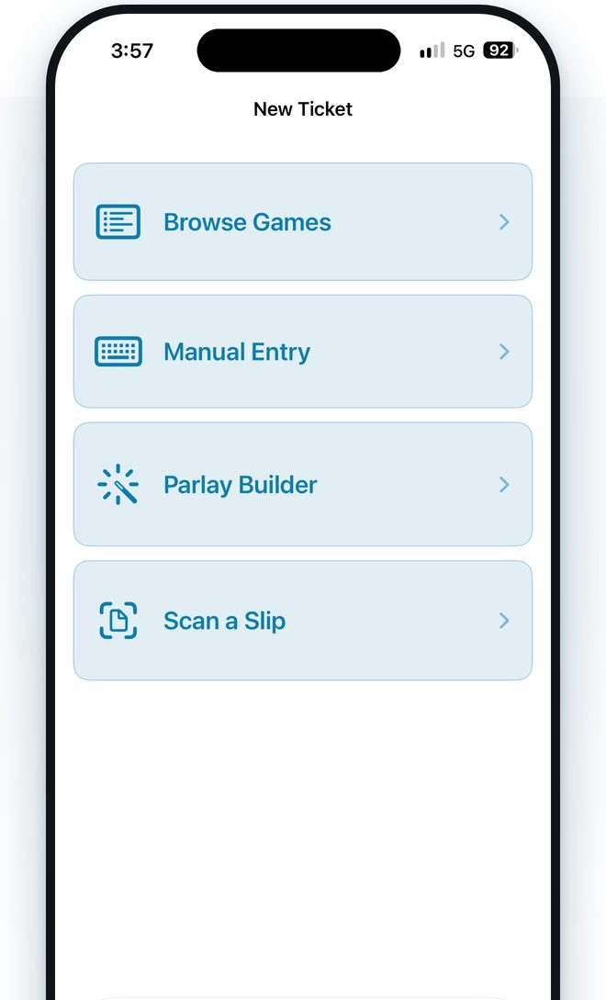
Know where every leg stands while the games are on.
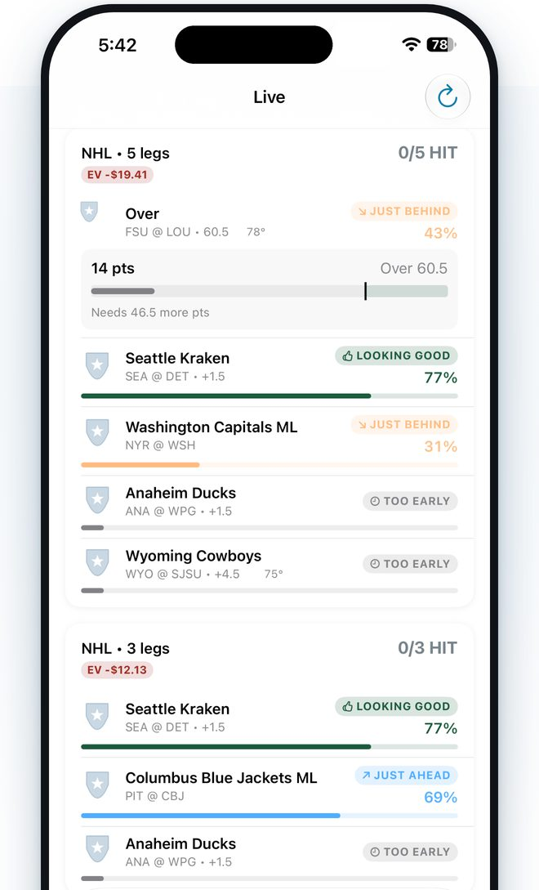
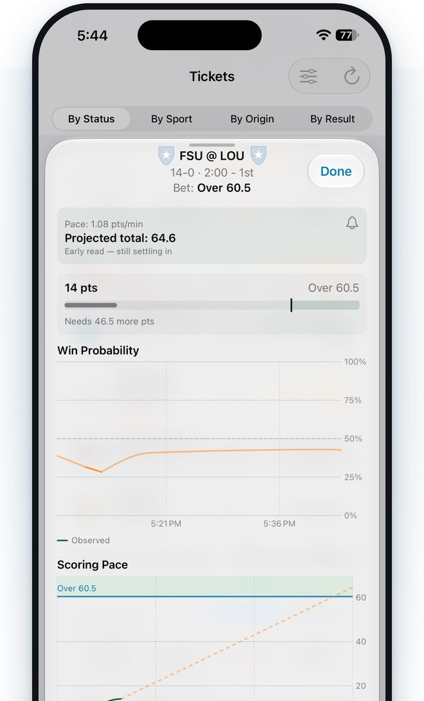
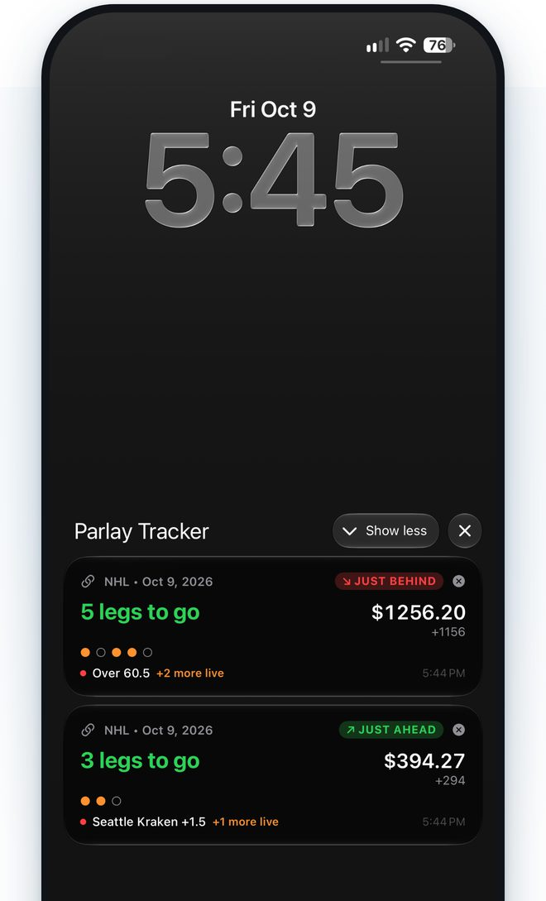
On your wrist, too.
The Apple Watch app shows every ticket in play with its chance to win, the legs left, and each leg's live score. Glance at it from the couch, the bar or the stands.
There are Home Screen and Lock Screen widgets as well, and Siri can answer "check my tickets".
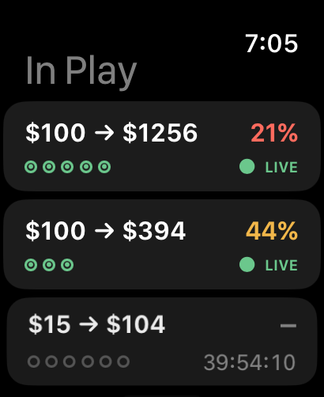
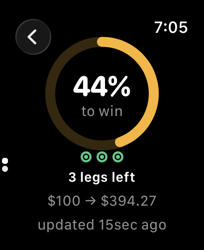
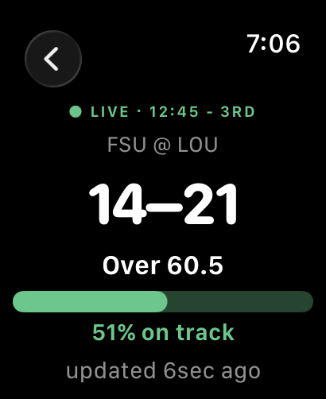
It grades itself.
A leg settles the moment it's decided. An over that's already cleared its line is marked a hit right away, without waiting for the final.
Pushes come out of the parlay and the payout is re-priced. Anything the scores can't decide gets a simple Hit or Miss button. When a ticket cashes you get confetti, and when it busts it gets torn in half, once.
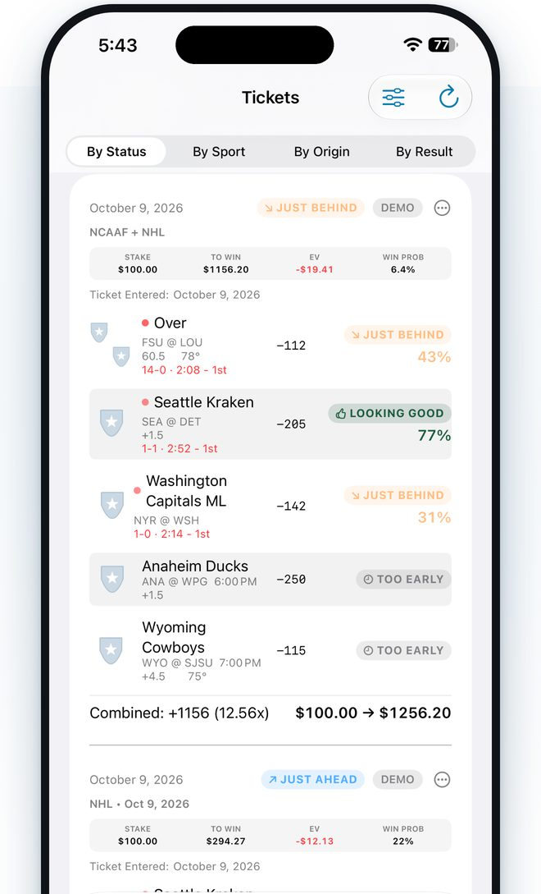
See how you're really doing.
Profit over time, a settlement calendar, hit rates by sport, book and bet type, and your results against what the odds you took predicted. When a ticket dies, it tells you which leg killed it.
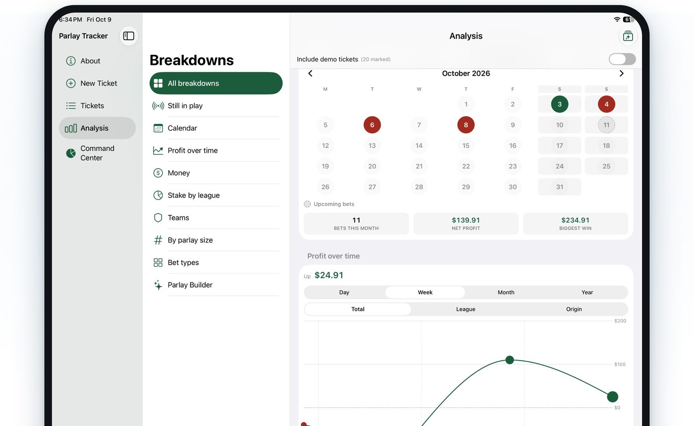
More of the app
Swipe or scroll for more.
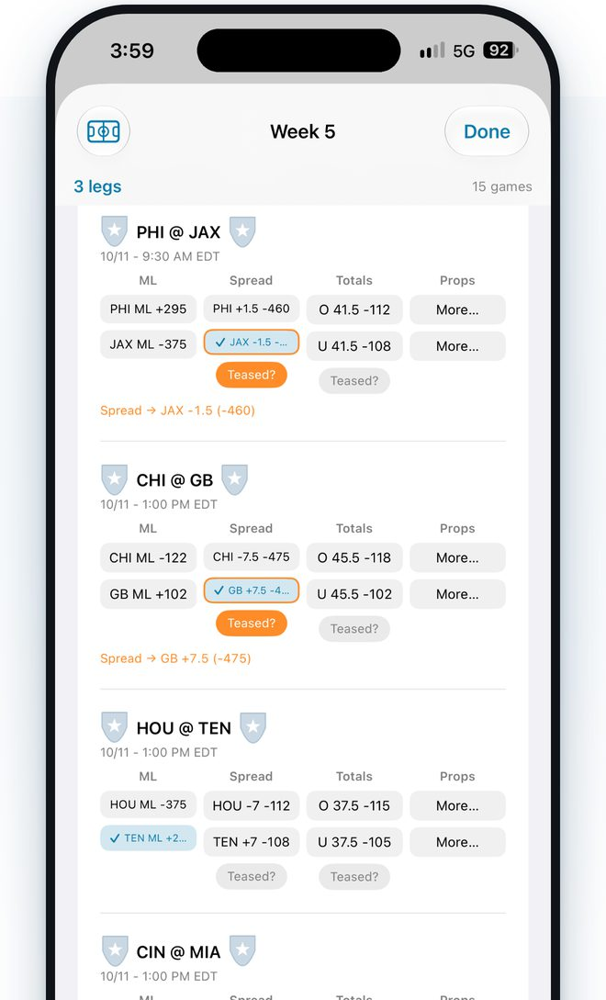
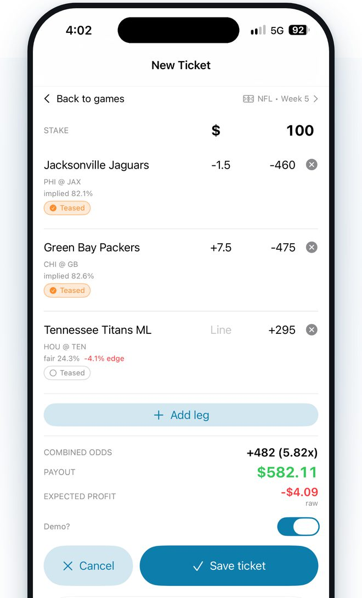
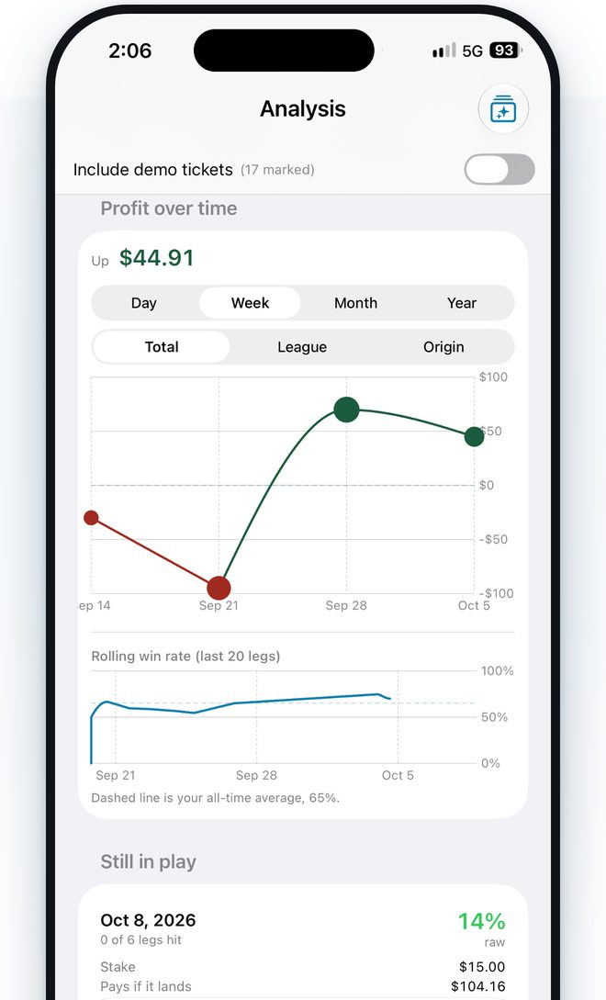
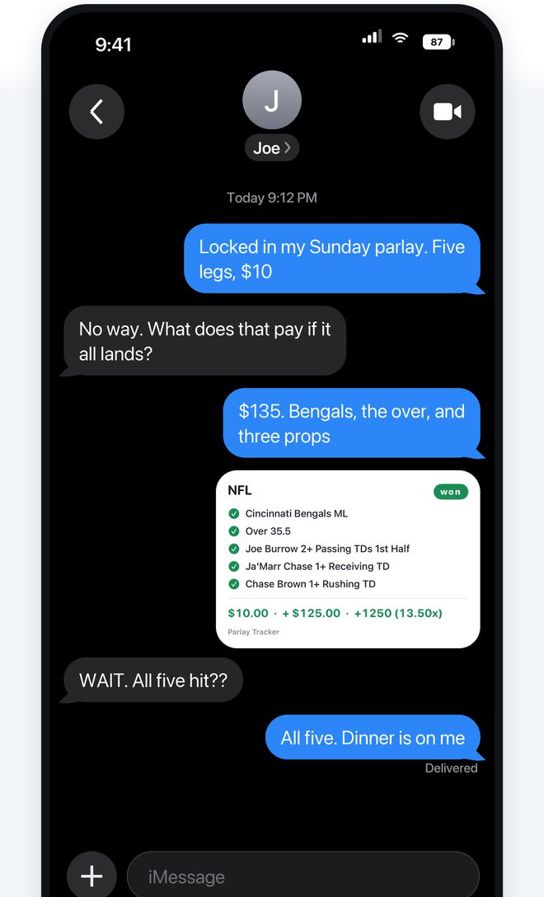
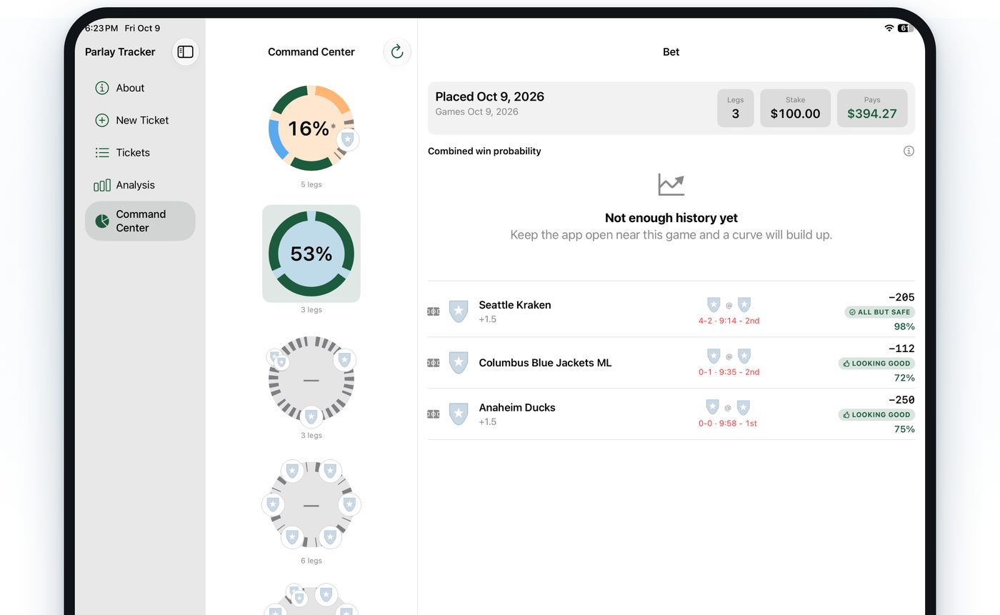
In a squares pool? Track your board too.
Scan the board, link it to the game, and Parlay Tracker works out each quarter's winning square, overtime rule included, and tells you when one of yours hits. For football boards it also estimates every square's chances from this season, the last few meetings and the weather.
Your bets stay yours.
No account, no ads and no analytics. Your tickets are saved on your device and synced only through your own iCloud. Read the privacy policy.
- No sign-upOpen it and add a bet. There's nothing to log in to.
- No trackingNo analytics, advertising or tracking code of any kind.
- Your iCloud, not our serverSync runs through your own iCloud account. We have no server that stores your bets.
- Slips read on your phoneScanning happens on the device. Your photos are never uploaded.
A notebook, not a sportsbook.
Parlay Tracker never takes a bet, holds money, or connects to a sportsbook account. It's a record of bets you made somewhere else, so you can follow them and see the real numbers.